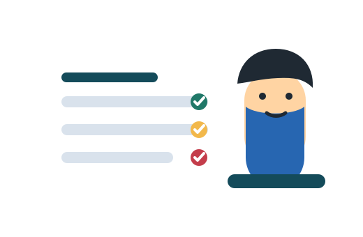

{{ task.category }}
{{ task.title }}
Due: {{ task.dueDate | date:'dd MMM yyyy' }}
{{ task.priority }}
Advanced Web Programming
Plan class work, lab tasks, submissions, and personal goals in one simple dashboard.

{{ filteredTasks.length }} task{{ filteredTasks.length === 1 ? '' : 's' }} found
{{ task.category }}
Due: {{ task.dueDate | date:'dd MMM yyyy' }}
No matching tasks yet. Add one from the form.